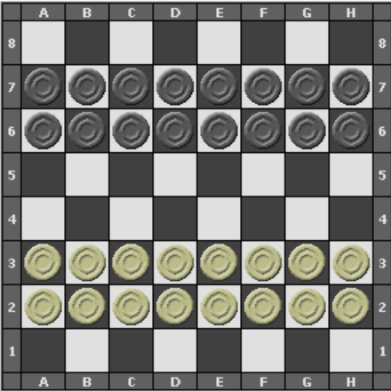
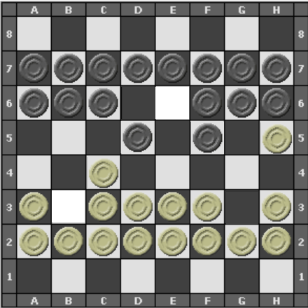
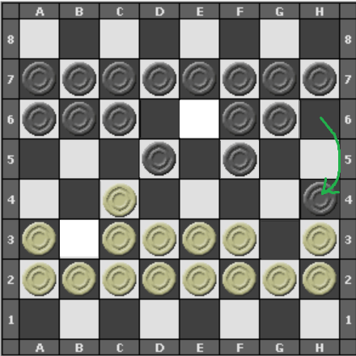
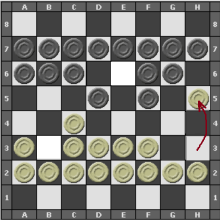
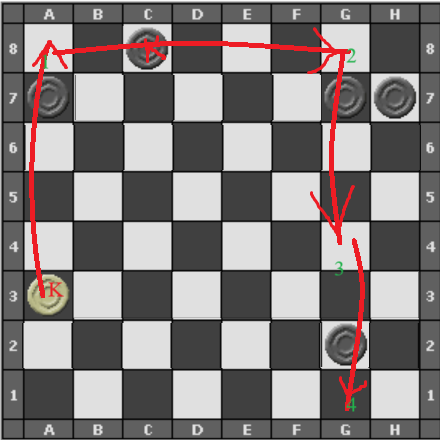
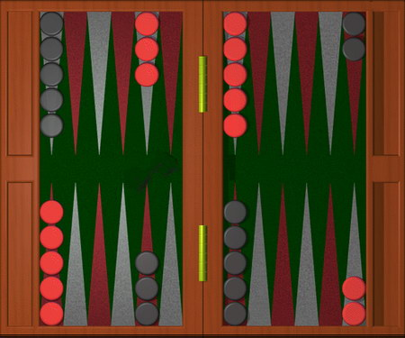
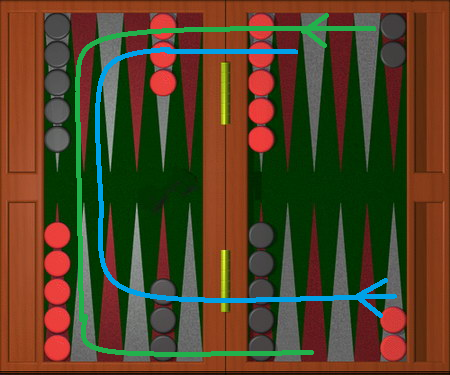
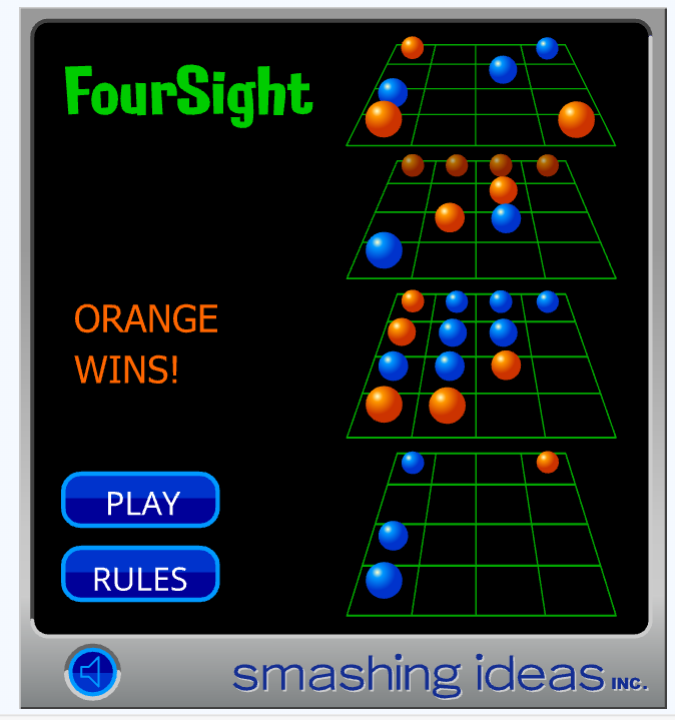

Variants of Three popular games
In this page, we describe the variantes of some well known games. The variants are also famous, but on a local level. The games which we will introduce are:
Dama
The game of draughts or checkers is a popular two player game, where each player has 12 identicle men that can move and can jump to capture pieces.Important characteristics of the game are that
- Capturing is obligatory.
- Promotion of a piece to a king when the piece reaches the last rank of the board. Kings can move backwards.
- The game ends if a player captures all the enemy pieces, or if your opponent has no legal moves left.

We summarize the differences with regular checkers in the following list.
- Each of the pieces can move only one space to the left, one space to the right, or one step forward.
Captures are similar to that in checkers, except that here they occur horizontally, or forwards in the vertical direction. - Regular pieces cannot move backwards, or capture backwards. Only a dama (or king) can jump backwards.
- Captures are obligatory, and multiple captures are obligatory. In case of different paths of captures, the one with
the largest number of captures should be chosen.
In the following position, it is the turn of the black player.

The white piece on h5 can be captured by the black piece on h6. Since captures are obligatory, black plays the capturing move:

Now, the black piece which jumped to h4 can be captured by the white piece on h3. And the white player captures back:

- When a piece reaches the last rank, it is promoted to a dama (a king). The dama can move horizontally or vertically forwards or backwards any number of step: same as the way a rook moves in chess. Only restricted by other pieces, or captures.
- To understand how a dama captures in this game we consider the following diagram

In this picture, the white player has a single dama at position a3. On its turn, the dama can make 4 captures by making the jump to a8 (capturing the piece on a7), then to g8 (capturing the king on c8), then to g4 (capturing the piece at g7) and then to g1 (capturing the piece on g2). These four jumps and captures are considered as a single move for the white player. - In case a player is left with a single piece, as the black player in the position above after the captures made by the white king, then this piece turns into a king automatically.
Mahbous variant of Backgammon
Backgammon is an race game between two players that involves dice.
Players have 15 stones positioned on a board with 24 rooms\locations.

The above picture includes the starting position of the international backgammon variant.
The initial position in the mahbous variant will be different.
Goal of the game
A player has to get move all his\her pieces two his\her inner corner with 6 rooms, and then remove them one by one out of the board.
The player who first accomplishes this wins. In the next diagram, we show the direction of motion and the inner corner or each player.

The 6 rooms on the top right of the picture form the inner corner for the red player. And the 6 rooms on the bottom
right of the board form the inner corner of the white player.
How do we use the dice?
On his/her turn, a player throws two dice. Let's say that they come up 3 and 5. A player has a choice of moving one available piece 3 steps (or 5 steps) in the direction of his play. And then move the same, or another available piece 5 (or 3 steps). The place where a piece lands cannot be guarded by the opponent.
Some important details
- If the dice rolls are a pair, such as a 5,5. The player plays the value, here 5, four times. It can be a single piece which advances four times, or one piece moves five steps three times, and then another, et cetera.
- If a player rolls 3,5 and there is no combination of legal moves to move 3 steps, the player only plays the 5. This is also true for the double rolls such as 3,3.
The occupied rooms
When a room is occupied by 2 or more pieces of a player, this room is blocked to the opposing player. A dice move, which would otherwise land a piece on this room now cannot be played by that piece, that would be an illegal move.
However, when a room is occupied by only one piece, this piece is considered unprotected. The opponent can land one or more pieces in the same room, on top of the first piece. And this room becomes occupied as well (see the capture rule)
The collecting phase of the pieces is the same as in standard backgammon, and is not described here.
So whats sets the mahbous variant apart?
- At the start of the game each player has all his 15 pieces in the same room, farthest from the inner room. In the popular variant of backgammon, the starting position has only 2 pieces of each player in the room farthers from the inner room, with the rest of the 13 distributed in other rooms.
- When a piece is unprotected, being the only piece in a room, and an opponent places a piece on top of it, the unprotected piece is imprisoned (is "mahbous"). It is not moved from the board, but cannot be moved untill the top piece(s) move. Then it can advance freely.
Some fun facts
When a player has imprisoned an opponent piece, it can happen that he/she rolls a die which forces the "guard" piece to move. Maybe a rol is 4, and there is no other legal move except to move the piece which was imprisoning the enemy piece. This could be frustrating
Throwing a double 6 usually means good news, since you can advance up to four pieces towards the inner corner. However, there are positions where all the 6-moves are blocked. In this case, a player looses his/her turn. This can be frustrating.
It is customary in the middle east to call out the rolls of the dice in Persian-Turkish with the larger number first, even though these may not be the official language. For example a roll of 5,3 is called "penj-ou-se" (j as in Jack), while a 3,1 is called "se-yeg". These are in Persian.
3D tic tac toe
Virtually everyone knows the game of tic-tac-toe: 2 players alternately choose squares from a 3x3 grid untill one of them gets three in a row, three in a file, or three on a main diagonal, or there are no more squares left.
This simple game has a more challenging cousin. Imagine we take a grid in three dimensions, of side 4 each. Two players alternately marks a square untill a player marks 4 in a straight line! This is easy to draw on paper, and we include here a screenshot taken from the site mathsisfun.com.
In the above screenshot, the orange player won because they completed the last row of the second floor from the top.
As one can check, there are 76 possible straight lines to choose from. This includes the four main diagonals of the cube.